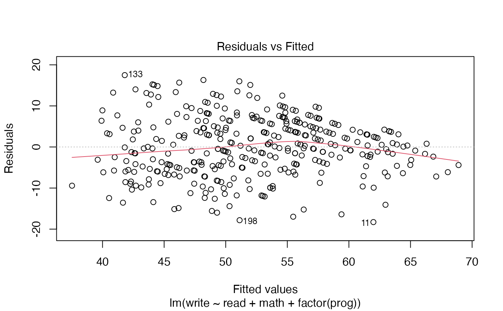

Five test scores, locus of control, self-concept, motivation and background of 350 students from High School and Beyond (HS&B), a longitudinal survey of U.S. high school students that the National Center for Education Statistics began in 1980. Each row is a student. The 350 are a subset of the 600-student HS&B teaching sample printed in Tatsuoka (1988); how they were chosen is not documented.
Format
A tibble with 350 rows and 16 variables.
idStudent ID. Type: integer. IDs come from the 600-case file, so they run from 1 to 599 with gaps.
genderGender. Values: 1 = male; 2 = female. Type: integer.
raceRace/ethnicity. Values: 1 = Hispanic; 2 = Asian; 3 = African American; 4 = White. Type: integer.
sesSocioeconomic status (3 groups). Values: 1 = low; 2 = middle; 3 = high. Type: integer.
schSchool type. Values: 1 = public; 2 = private. Type: integer.
progHigh school program. Values: 1 = general; 2 = academic; 3 = vocational. Type: integer.
locusLocus of control. Units: scale score. Type: double. Construction and direction of the scale are not documented in the sources.
conceptSelf-concept. Units: scale score. Type: double. Construction and direction of the scale are not documented in the sources.
motMotivation. Units: score (0 to 1). Type: double. Takes only the values 0, 0.33, 0.67 and 1; its construction is not documented in the sources.
careerCareer choice. Values: 1 = clerical; 2 = craftsman; 3 = farmer; 4 = homemaker; 5 = laborer; 6 = manager; 7 = military; 8 = operative; 9 = prof1; 10 = prof2; 11 = proprietor; 12 = protective; 13 = sales; 14 = school; 15 = service; 16 = technical; 17 = not working. Type: integer. Raw category labels. prof1, prof2, protective and school probably mean the NCES categories professional 1, professional 2, protective service and school teacher; this is not documented in the sources.
readReading score. Units: score points. Type: double.
writeWriting score. Units: score points. Type: double.
mathMath score. Units: score points. Type: double.
sciScience score. Units: score points. Type: double.
ssSocial studies score. Units: score points. Type: double.
sampleSubset flag (constant). Values: 1 = in this subset (every row). Type: integer. It marks the 350-case subset of the 600-case file and is not a sampling weight.
See codebook("hsbs1") for this table as a data frame.
Source
Tatsuoka, M. M. (1988). Multivariate analysis: Techniques for educational and psychological research (2nd ed.). Macmillan. https://cran.r-project.org/package=candisc
350-student subset of Tatsuoka's 600-student file (also on CRAN as candisc::HSB), via the UC Berkeley EDUC 275B course files. Provenance: probable.
Details
A subset, not the whole file. The 350 students are part of Tatsuoka's
600, so their IDs run from 1 to 599 with gaps. sample equals 1 in every
row: it marks membership in this subset and is not a sampling weight. The
match with Tatsuoka's file is probable rather than verified, because the
values have not been compared one by one with candisc::HSB.
Coding. gender, race, ses, sch, prog and career are integer
codes (see the Format section). Wrap them in factor() in a model, or R
treats them as numbers; ses here is a three-group category, not a
continuous score. How locus, concept and mot were built, and which
way they run, is not documented. There are no missing values. Version
1.0.0 changed no values; it corrects the v0.2.0 help page, which presented
the file as the whole sample and sample as a weight.
Suggested analyses.
regression diagnostics: residual plots, leverage (
hatvalues()) and influence (cooks.distance());model building with five correlated test scores (
read,write,math,sciandss, with pairwise correlations from 0.50 to 0.69), where multicollinearity shows;categorical predictors with several levels, such as
progorrace.
See also
hsb_sub for a different High School and Beyond extract, with
students nested in five schools. candisc::HSB on CRAN has all 600
students of Tatsuoka's file. codebook() gives the variable table as a
data frame, and list_datasets() lists the other datasets.
Examples
head(hsbs1)
#> # A tibble: 6 × 16
#> id gender race ses sch prog locus concept mot career read write
#> <int> <int> <int> <int> <int> <int> <dbl> <dbl> <dbl> <int> <dbl> <dbl>
#> 1 303 2 4 1 1 1 -0.840 -0.240 1 4 54.8 64.5
#> 2 404 2 4 2 1 1 -0.380 -0.470 0.670 4 62.7 43.7
#> 3 225 1 4 2 1 2 0.890 0.590 0.670 6 60.6 56.7
#> 4 553 1 4 2 2 2 0.710 0.280 0.670 16 62.7 56.7
#> 5 433 2 4 2 1 3 -0.640 0.0300 1 4 41.6 46.3
#> 6 189 2 4 3 1 2 1.11 0.900 0.330 6 62.7 64.5
#> # ℹ 4 more variables: math <dbl>, sci <dbl>, ss <dbl>, sample <int>
# Writing score on reading, math and program type (as a factor)
fit <- lm(write ~ read + math + factor(prog), data = hsbs1)
summary(fit)
#>
#> Call:
#> lm(formula = write ~ read + math + factor(prog), data = hsbs1)
#>
#> Residuals:
#> Min 1Q Median 3Q Max
#> -18.2879 -4.8890 -0.0389 4.7317 17.4959
#>
#> Coefficients:
#> Estimate Std. Error t value Pr(>|t|)
#> (Intercept) 16.80528 2.59364 6.479 3.18e-10 ***
#> read 0.32825 0.05385 6.095 2.92e-09 ***
#> math 0.36290 0.06047 6.001 4.96e-09 ***
#> factor(prog)2 0.63685 1.01360 0.628 0.5302
#> factor(prog)3 -1.85074 1.09318 -1.693 0.0914 .
#> ---
#> Signif. codes: 0 ‘***’ 0.001 ‘**’ 0.01 ‘*’ 0.05 ‘.’ 0.1 ‘ ’ 1
#>
#> Residual standard error: 7.167 on 345 degrees of freedom
#> Multiple R-squared: 0.4628, Adjusted R-squared: 0.4566
#> F-statistic: 74.31 on 4 and 345 DF, p-value: < 2.2e-16
#>
# Diagnostics: residuals against fitted values; the largest Cook's distances
plot(fit, which = 1)

head(sort(cooks.distance(fit), decreasing = TRUE))
#> 10 38 11 40 41 76
#> 0.02558564 0.02109823 0.02022957 0.01781894 0.01757068 0.01754445